Original hero
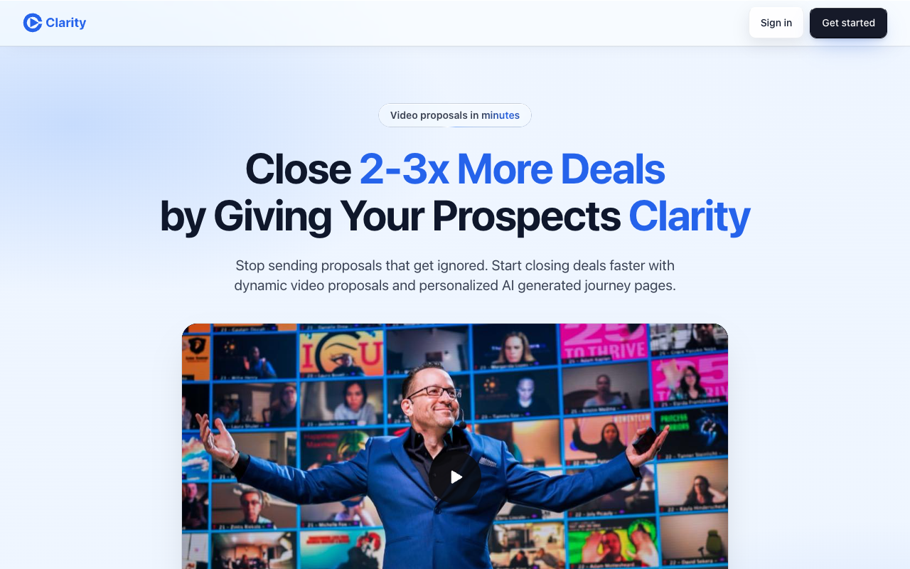
Baseline 8ab318a6. Public marketing capture.
Clarity design study · 4 November 2026
Evidence and iterations, still in progress. No full-product score is established.
Four scoped usability changes are verified: phone Leads, editor controls, recorder recovery and email validation. The homepage direction has improved and remains in iteration. These are branch-preview changes. Production is unchanged.
Open the working PR preview · Review PR 1692
One fresh GPT-6.1 Sol review graded the same nine observable criteria in all three versions. They cover 70% of criterion weight. Scores below describe the hero only.
Reviewer uncertainty matters. An earlier review gave the original 5.83 and first revision 7.49. Those differences between reviews are not product changes. Neither review establishes a complete marketing-page or whole-product score.

Baseline 8ab318a6. Public marketing capture.
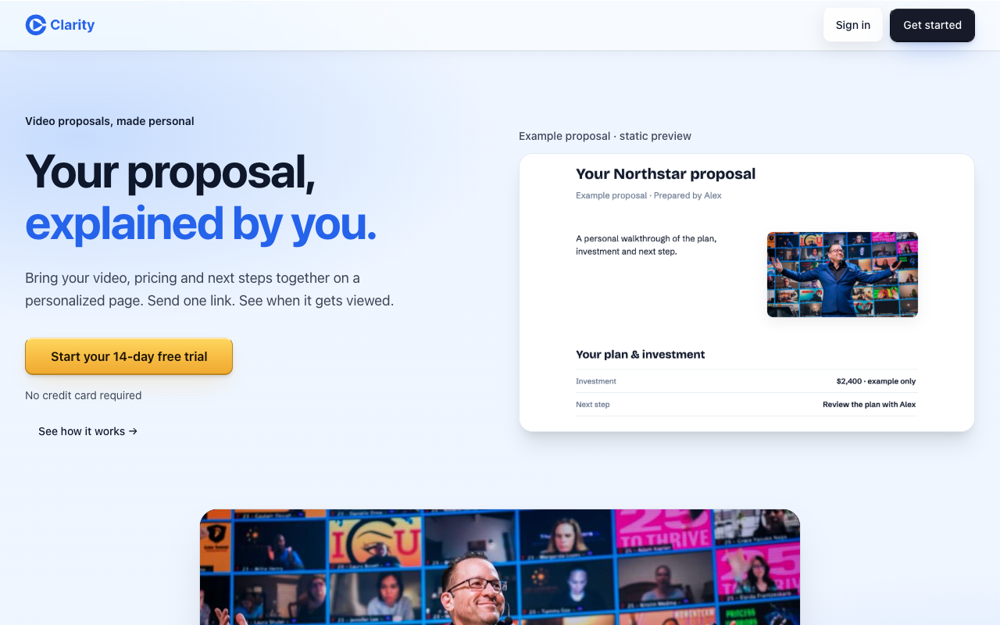
Preview a63fff891. Runtime verified. The event poster and phone proof remain design weaknesses.
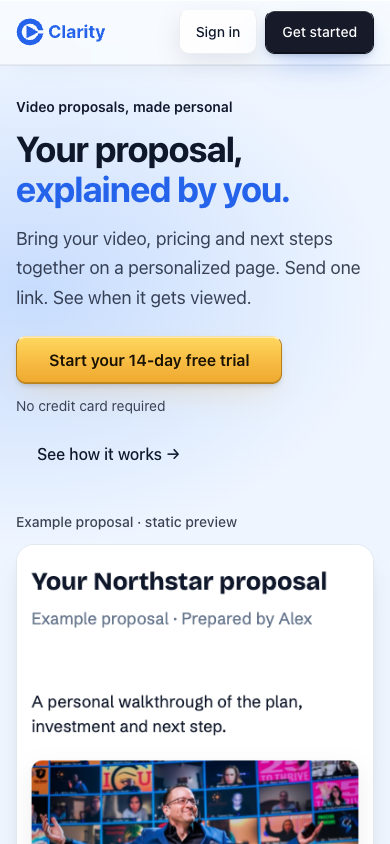
These totals cover specific tasks with different evidence boundaries. They do not rank entire product areas.
| Task | Weighted score / 10 | Criterion weight observed |
|---|---|---|
| Phone Leads | 6.52 | 96 / 100 |
| Editor toolbar and palette | 7.27 | 88 / 100 |
| Missing-device recorder setup | 7.33 | 96 / 100 |
| Email-entry validation | 7.42 | 96 / 100 |
Missing evidence includes the complete three-model panel, signed-in competitor tasks, some onboarding and billing states, and broader accessibility and performance testing. The 9/10 goal remains unproven. No weekly quota warning has been observed; account balances are unavailable.
Same criteria and weights for each captured site. Scores describe the supplied frames, not the complete product. Some frames include consent notices or incomplete animation.
brand craft, color, hierarchy, layout, task clarity, trust copy, typography. Scores are weighted by the published rubric, then normalized over this shared subset. The order follows the review packet rather than ranking the products.
These weights express Clarity's priorities. They are not an industry-standard certification. Missing evidence remains unassessed.
| Criterion | Weight | What it measures |
|---|---|---|
| Task clarity | 10% | Purpose, next action, navigation, information architecture and understandable labels. |
| Hierarchy | 10% | Visual priority, grouping, progressive disclosure and scannability. |
| Typography | 8% | Legibility, type scale, line length, line height and type consistency. |
| Layout | 8% | Alignment, spacing rhythm, density, composition and appropriate use of space. |
| Color | 6% | Color semantics, visual separation and restraint. Technical contrast compliance is scored under accessibility. |
| Consistency | 10% | Predictable controls, terminology, components, navigation and cross-screen behavior. |
| Interaction | 8% | Discoverable affordances, direct manipulation, user control, task efficiency and keyboard alternatives. |
| States | 8% | Useful empty, loading, success, validation, failure and recovery states; preservation of user work. |
| Accessibility | 10% | Measured contrast, semantics, accessible names, focus order/visibility, keyboard use, zoom and motion preferences. Screenshots alone cannot establish this score. |
| Responsive | 8% | Observed phone and desktop usability, overflow, target size, reflow and content priority. |
| Trust copy | 6% | Precise language, reassurance, truthful status, predictable privacy and clear billing/publishing consequences. |
| Brand craft | 4% | Distinctive, coherent identity; polished imagery and details serving this audience and task. |
| Perceived performance | 4% | Observed feedback latency, loading stability, media readiness and motion that does not delay work. Record session conditions; do not infer speed from an image. |
The full-product assessment also weights the editor at 18%, Library at 12%, buyer pages at 12%, marketing/onboarding/recorder/sharing at 10% each, analytics at 8%, and settings/billing at 5% each.
Draft PR #1692 contains verified phone Leads, editor controls, recorder recovery and email validation changes. The homepage is under design iteration. Check results and captured commits are recorded with each change; the full-product assessment remains incomplete. The PR remains unmerged.
Remaining work includes fuller onboarding and billing evidence, signed-in reference tasks and further visual refinement. A reported analytics count mismatch remains a follow-up.
At commit 919e1a83f, independent browser checks confirmed complete wrapping at 320px and 390px and field-label contrast of at least 16.15:1. Search, page filtering, pagination, and deleted-page link behavior passed at the prior head; the final change only darkened labels. Screen reader, zoom and admin Organizations remain untested. This is a verified scoped improvement, not a full-product design grade.
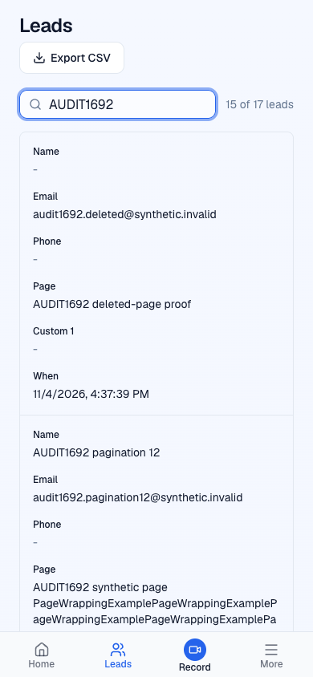
Only synthetic test data appears in this screenshot. The baseline app screenshots remain private.
No complete three-model grade or 9/10 result is claimed. Competitor account access, additional interaction states, and the remaining reviewer seats are required for the full assessment.
Only public marketing pages appear here. Private app screens, test-account identities and authentication data are excluded.
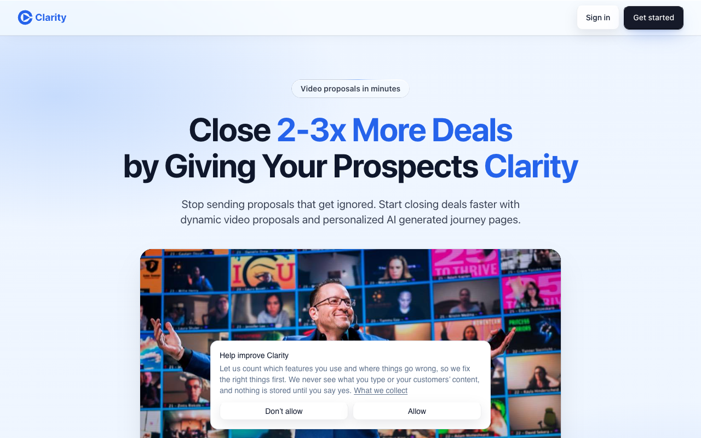
Public marketing capture. This image does not establish signed-in app quality.
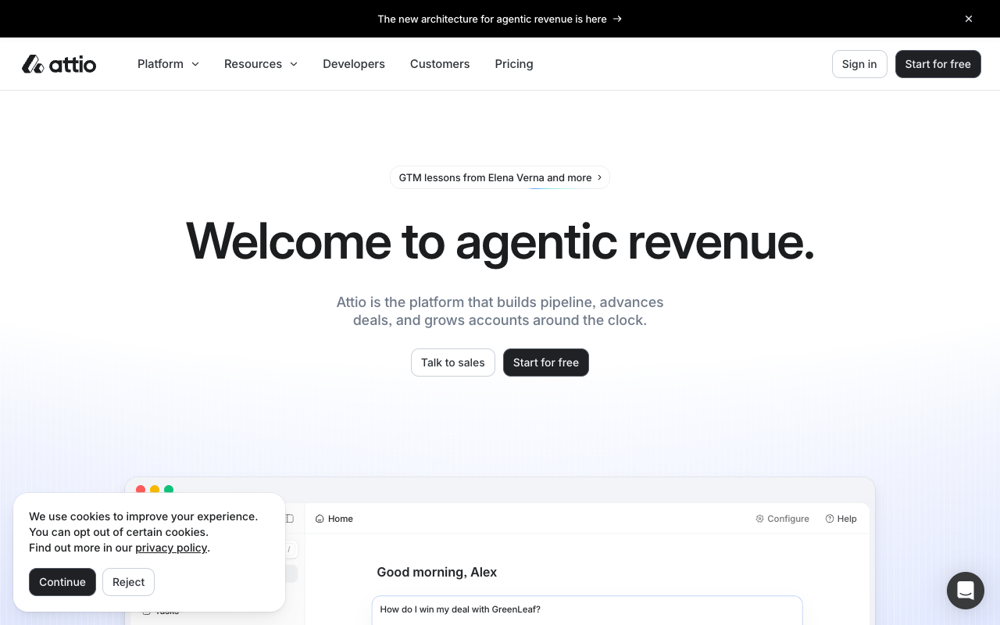
Public marketing capture. This image does not establish signed-in app quality.
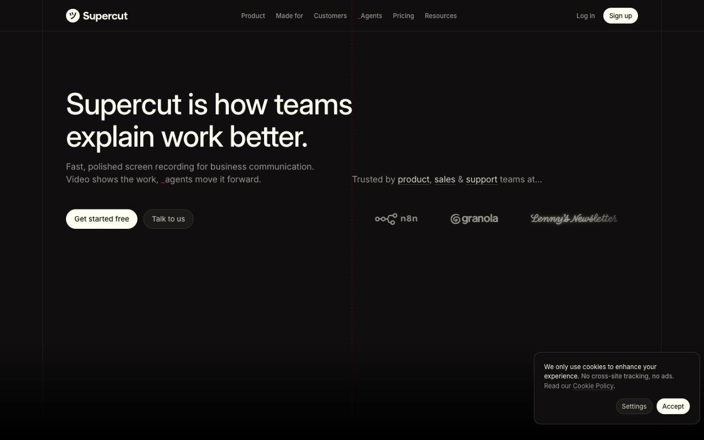
Public marketing capture. Animation readiness uncertain; recollection needed before final grading.
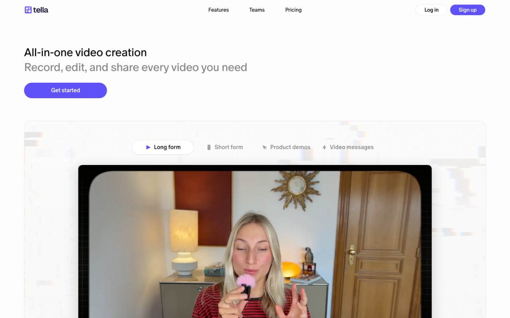
Public marketing capture. This image does not establish signed-in app quality.
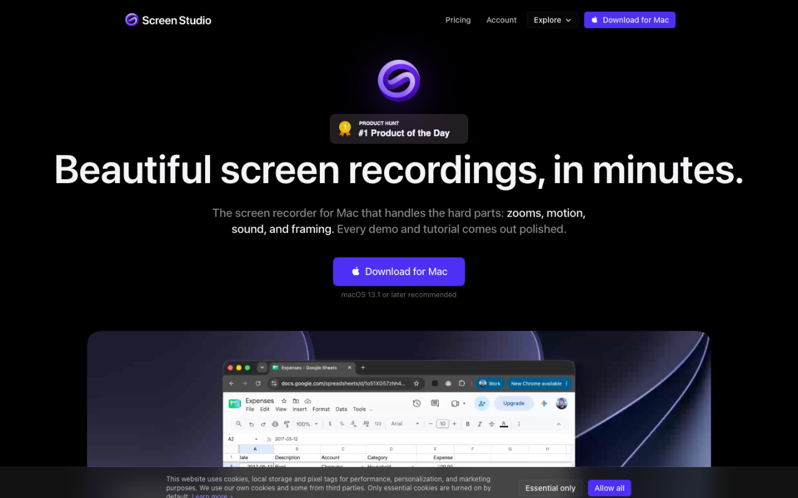
Public marketing capture. This image does not establish signed-in app quality.
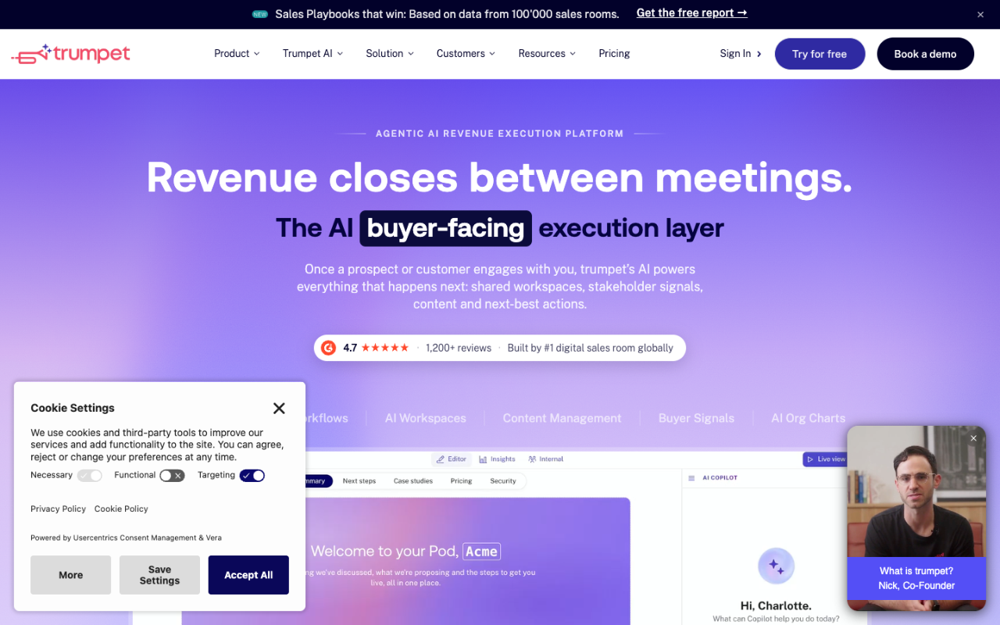
Public marketing capture. Animation readiness uncertain; recollection needed before final grading.
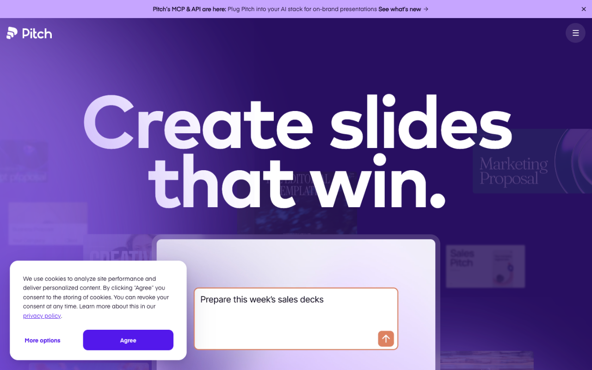
Public marketing capture. This image does not establish signed-in app quality.
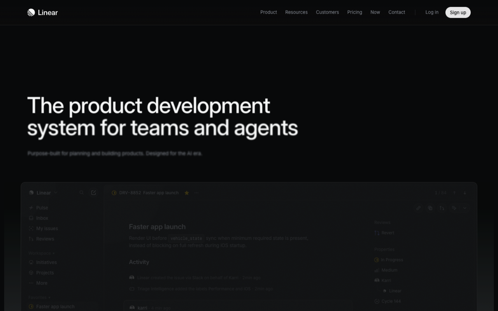
Public marketing capture. Animation readiness uncertain; recollection needed before final grading.
Public marketing capture. This image does not establish signed-in app quality.
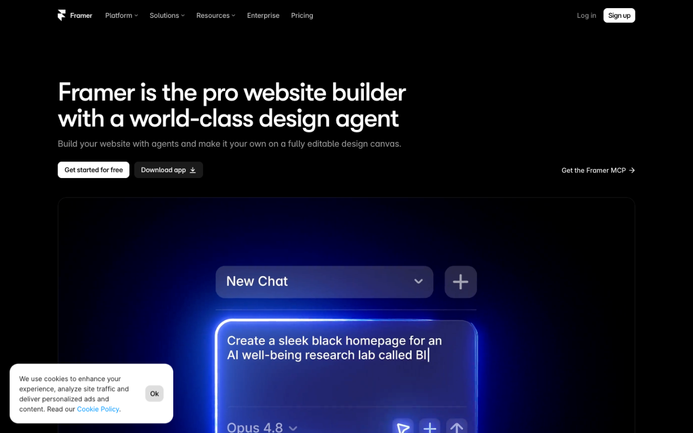
Public marketing capture. This image does not establish signed-in app quality.
At commit 32269ae32, independent browser checks confirmed two toolbar rows at 320px and 390px, visible Style and Share labels, and a working one-row desktop header. The Style palette fits at 320px. Escape closes the nested color picker before the Style panel and returns focus to the appropriate opener. The AI popover also returns focus correctly.
Share opens its dialog without publishing. This verifies the tested interactions; it is not a full editor score or a screen-reader certification.
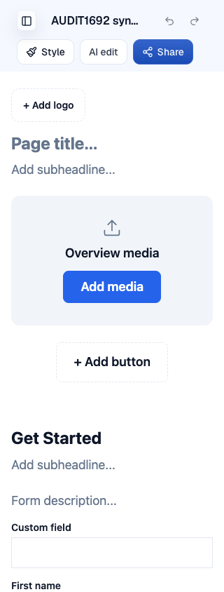
Recorder recovery and labels were verified at a4aa2e7. Selected-label contrast was at least 14.40:1, and the embedded recorder fit at 320px and 390px. Real hardware, screen reader and zoom remain unassessed.